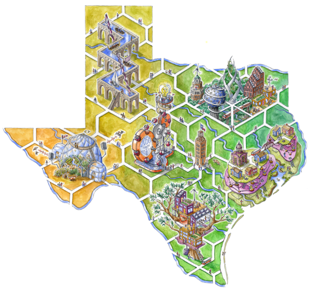

Collaborations and Programs
Below you will find brief descriptions of the programs that I have contributed to:
Graduate Research Fellowships: NSF & NASA
Role: Graduate Research Fellow
During my dual master's degrees and PhD, I was awarded the National Science Foundation Gradute Research Fellowship (NSF GRFP) and the Future Investigator In NASA Earth and Space Science and Technology (NASA FINESST) fellowships. These fellowships supported my thesis and dissertations, while allowing me to contribute to the numerous following programs listed below.
Southeast Texas Urban Integrated Field Lab
Role: Graduate Researcher
The Southeast Texas Urban Integrated Field Lab (SETx-UIFL) is one of four Urban Integrated Field Laboratories (UIFLs) awarded in Fall 2022 by the Biological and Environmental Research Program, Office of Science, U.S. Department of Energy. The UIFLs advance the sciences of climate, environmental, ecological, and urban change affecting heterogeneous urban regions to inform and develop sustainable, resilient, and equitable solutions. The SETx-UIFL focuses on Southeast Texas, specifically the Beaumont-Port Arthur Metropolitan Statistic Area (MSA). This economically significant region represents many urban centers along the Gulf Coast characterized by the population diversity and vulnerability, and ecological richness as well as climate adaptation needs.
Planet Texas 2050
Role: Graduate Researcher
Planet Texas 2050 researchers are committed to developing programs, tools, and policy recommendations that will improve Texas' adaptability and build its resilience. To do that, we have created a set of innovative and interdisciplinary projects that leverage the talents and expertise of our research network to tackle critical issues when it comes to helping Texas respond to rapid growth and climate change.

ATX NASA Climate Atlas
Role: Graduate Researcher
The City of Austin, TX (ATX) wants to strategically address equity and environmental justice (EEJ) through climate resiliency and infrastructure investment options. This strategic path has challenges. One important being, prioritizing the neighborhoods where investments are made relative to the hotspots of environmental stresses they experience. Our project partner, Go Austin/Vamos Austin (GAVA), has compiled information and experiences that show the disproportionate environmental extremes the historically underserved neighborhoods face and the additional costs they incur due to rising housing prices and associated cost of living. This data integration project combines municipal policy analysis, local community experiences and independent geospatial data from academic teams to provide a more effective means for the City to undertake EJ decisions.